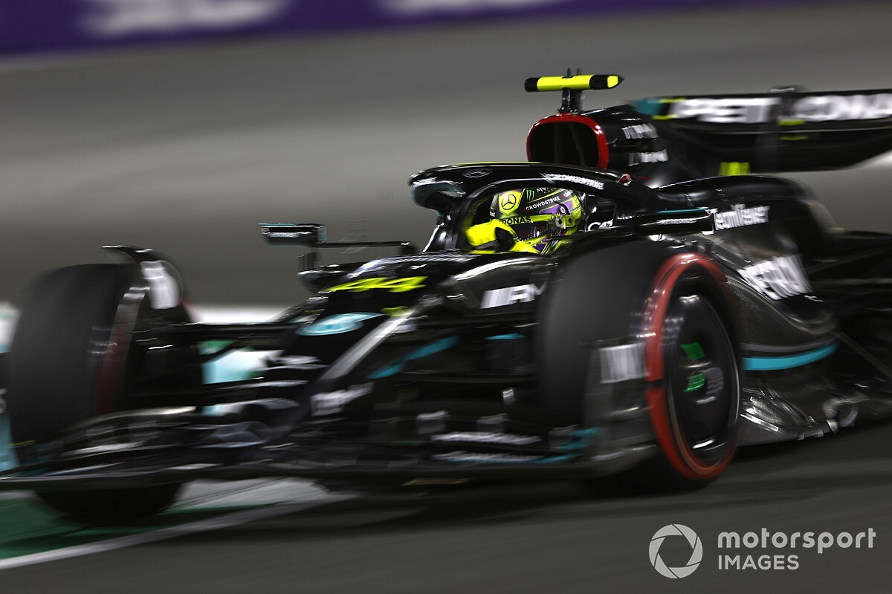
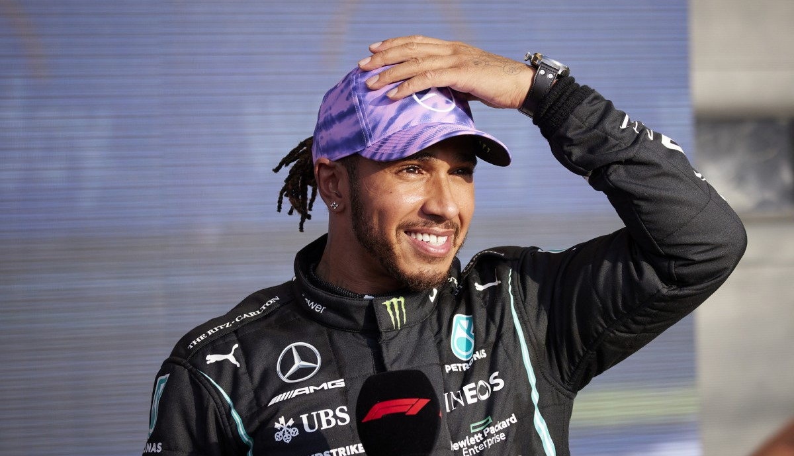

Biodata Diri

Lewis Hamilton adalah pembalap mobil profesional dari Britania Raya yang membalap untuk tim Mercedes di ajang Formula Satu.
Ia memegang rekor gelar dunia terbanyak dengan 7 gelar, serta memiliki kemenangan terbanyak (103), posisi pole (104), dan finis podium terbanyak (197).
Hamilton lahir pada 7 Januari 1985 di Stevenage, Hertfordshire, Inggris. Dia bergabung dengan program pembalap muda McLaren pada tahun 1998 dan
membalap untuk tim tersebut dari tahun 2007 hingga 2012. Hamilton adalah pembalap berkulit hitam pertama dan satu-satunya dalam sejarah F1 pada saat itu.
Debut Hamilton di F1 dimulai dengan finis kedua di belakang Kimi Räikkönen pada tahun 2007. Pada tahun berikutnya, ia memenangkan gelar dunia pertamanya
dalam sejarah F1 pada putaran terakhir balapan. Setelah masa sukses bersama McLaren, Hamilton bergabung dengan tim Mercedes pada tahun 2013.
Di era mesin turbo-hybrid mulai tahun 2014, ia berhasil meraih 6 gelar juara dunia, termasuk empat gelar berturut-turut dari 2017 hingga 2020.
Karier

Lewis Hamilton, seorang ikon dalam dunia balap Formula Satu (F1), telah mengukir sejarah yang tak terlupakan sejak debutnya pada tahun 2007 bersama tim McLaren Mercedes.
Lahir pada 7 Januari 1985 di Stevenage, Hertfordshire, Inggris, Hamilton menemukan panggilannya di dunia balap sejak usia muda dan segera menonjol sebagai salah satu bakat terbesar dalam olahraga ini.
Debut Hamilton di F1 pada Grand Prix Australia 2007 langsung menarik perhatian dengan finis kedua di balik juara bertahan saat itu, Kimi Räikkönen. Dalam musim rookie-nya yang mengesankan,
Hamilton memenangkan empat balapan dan finis di posisi kedua secara keseluruhan di kejuaraan dunia, hanya kalah satu poin dari juara, rekan setimnya, Fernando Alonso.
Prestasinya memecahkan sejumlah rekor, termasuk menjadi pembalap rookie pertama yang finis di posisi kedua dalam kejuaraan dunia.Setelah enam musim bersama tim McLaren,
Hamilton bergabung dengan tim Mercedes pada tahun 2013. Keputusan itu membuka babak baru dalam kariernya. Dalam era mesin turbo-hybrid yang dimulai pada tahun 2014,
Hamilton menjadi sosok dominan. Dia memenangkan enam gelar juara dunia, dua di antaranya datang dalam pertarungan ketat dengan rekan setimnya, Nico Rosberg,
yang kemudian pensiun setelah memenangkan gelar pada tahun 2016.Di samping Rosberg, rival Hamilton termasuk Sebastian Vettel dari tim Ferrari.
Pertarungan sengit antara mereka menjadi sorotan dalam beberapa musim terakhir. Hamilton dua kali berhasil membalikkan defisit poin pada pertengahan musim untuk meraih gelar juara dunia secara berturut-turut pada tahun 2017 dan 2018.
Dia menambah dua gelar lagi pada tahun 2019 dan 2020, menyamai rekor tujuh gelar juara dunia yang dipegang oleh legenda F1, Michael Schumacher.Selain kemenangannya yang gemilang,
Hamilton juga menjadi sosok inspiratif di luar lintasan. Dia aktif dalam berbagai kampanye untuk keadilan sosial, hak asasi manusia, dan lingkungan. Sebagai pembalap berkulit hitam,
Hamilton telah menjadi tokoh penting dalam mempromosikan inklusivitas dan keragaman dalam olahraga.Ketidakkenalan Hamilton akan batasan dan tekadnya untuk selalu berkembang telah menjadikannya sebagai salah satu pembalap paling dominan dan berpengaruh dalam sejarah F1. Dengan rekor kemenangan, posisi pole, dan finis podium terbanyak, Hamilton tidak hanya menetapkan standar baru dalam olahraga ini, tetapi juga menginspirasi generasi mendatang pembalap. Perjalanan karier Hamilton adalah cerita tentang keberhasilan, ketahanan, dan dedikasi yang tak tergoyahkan, membuatnya menjadi salah satu ikon terbesar dalam dunia balap.
Pencapaian Karier

- Juara Dunia Pembalap Formula Satu: 2008, 2014, 2015, 2017, 2018, 2019, 2020
- DHL Fastest Lap Award: 2014, 2015, 2017, 2019, 2020
- FIA Pole Trophy/Pirelli Pole Position Award: 2015,[336] 2016,[337] 2017, 2018, 2020
- Hawthorn Memorial Trophy: 2007, 2008, 2012, 2014, 2015, 2016, 2017, 2018, 2019, 2020, 2021
- Trofi Lorenzo Bandini: 2009